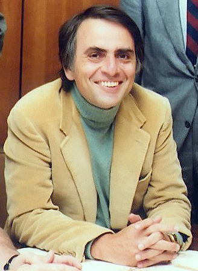

How to Start Contributing to Open Source
@carols10cents
hi there
my name is Carol
I get to build stuff
and destroy stuff
mostly using OSS

pipe dream
give back
NOT CONTRIBUTING TO OPEN SOURCE DOES NOT MAKE YOU A BAD PERSON!!!
ahem.
how
put your code online
triage issues
report issues
add tests
add documentation
answer questions on stackoverflow
which projects???
ones you use and are familiar with
ones with maintainers you know
ones with tests
ones with well organized issues
24 pull requests
what will happen?
most likely... :(
nothing
closed
asked to modify
accepted